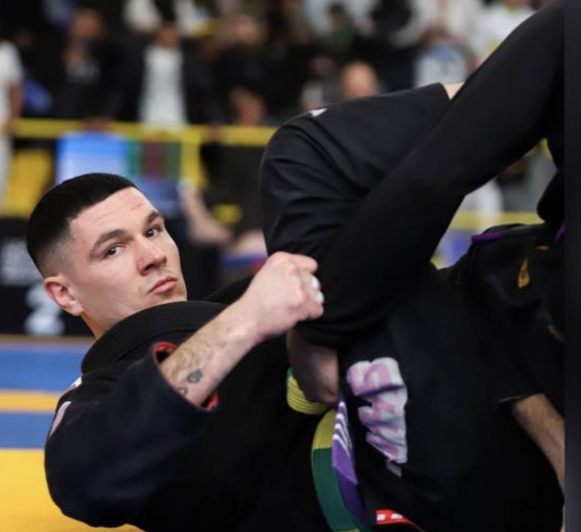

Technique
Des concepts simples, testés et répétés jusqu’à devenir utilisables en opposition.
Jiu-Jitsu Brésilien · Grappling · No-Gi · Toulouse Sud
KODA Jiu-Jitsu Academy ouvre à Lacroix-Falgarde avec un projet clair : proposer une académie exigeante, moderne et accessible, portée par Yoan Gomez, ceinture noire et compétiteur national/international.
L’académie
KODA évoque l’idée d’un allié, d’un compagnon fiable, d’un partenaire avec lequel on avance. En Jiu-Jitsu, la progression repose sur la confiance, la régularité, le respect et la qualité du groupe.
Notre positionnement : un cadre sobre, propre, structuré et exigeant, capable d’accueillir les débutants, d’accompagner les confirmés et de préparer les compétiteurs.
Des concepts simples, testés et répétés jusqu’à devenir utilisables en opposition.
Hygiène, sécurité, respect des partenaires et progression intelligente.
Une culture compétition pour ceux qui veulent se challenger, sans pression pour les loisirs.
Un enseignement porté par un directeur technique ceinture noire et compétiteur actif.
Le lieu
Le dojo et ses annexes disposent de 300 m², dont 132 m² de tatamis. Un espace adapté pour apprendre, répéter, combattre et organiser progressivement stages, passages de grades et événements internes.

Directeur Technique · Cofondateur · Ceinture noire de Jiu-Jitsu Brésilien
Direction technique
Pratiquant depuis décembre 2015, Yoan Gomez a construit son expérience à travers des entraînements à l’étranger, des compétitions nationales et internationales, et une pratique constante orientée performance.
Il s’est notamment entraîné au Brésil, berceau du Jiu-Jitsu Brésilien, ainsi qu’au Canada, enrichissant sa vision technique et sa pédagogie.
Palmarès
Sélection des principaux résultats. Yoan compte également d’autres podiums obtenus depuis les catégories ceinture blanche et bleue.
Cours
Contrôles, passages de garde, renversements, soumissions et stratégie de combat.
Transitions rapides, lutte, mobilité, contrôles sans kimono et intensité.
Apprendre les bases, comprendre les positions et progresser en sécurité.
Préparation spécifique, randoris situationnels, coaching et gestion du stress.
Planning
Le planning officiel, les inscriptions aux cours d’essai, les stages et les événements internes seront centralisés sur Strivy.
Gestion du club
KODA utilisera Strivy pour centraliser les souscriptions, paiements, plannings, stages, compétitions internes, boutique et informations importantes du club. Le site reste la vitrine premium ; Strivy devient l’espace opérationnel des adhérents.
Remplacer ce lien par l’URL Strivy officielle de KODA dès création de l’espace club.
Adhésion, licence, cotisation et paiement en ligne.
Cours, stages, événements, présences et mises à jour.
Challenges, inscriptions, suivi et communication.
Kimonos, rashguards, hoodies et équipements KODA.
Contact
Vous souhaitez essayer, inscrire un adolescent, rejoindre le groupe adulte ou recevoir l’ouverture Strivy ?
Email : olivier@gourrin.fr
Lieu : Dojo de Lacroix-Falgarde
Demander un cours d’essai